第十章：带通调制与解调¶
I. 基本概念与背景知识（核心精简）¶
带通调制的核心本质是将基带信号的频谱搬移至较高频率（通过改变正弦载波的幅度、频率或相位来实现）。
- 为什么要调制？
- 适应无线信道：天线尺寸通常需要达到信号波长的四分之一 (\(\lambda/4\))，只有将频率提高，波长变短，天线尺寸才能做到合理大小。
- 解决频谱紧张：由于现代大容量、远距离数字通信的需求，需要在有限带宽内容纳更多用户。
- 技术要求： 在衰落信道下误码率低、解调效率高（低功耗、小体积）、传输速率高、易于集成（VLSI）。
- 调制分类： 线性调制（带宽效率高，适合多用户无线通信）与非线性调制。
II. 数字带通调制技术¶
2.1 调制载波的一般表达式与能量关系¶
带通数字信号的通用载波表达式为：
- \(A(t)\): 载波的振幅信号
- \(\omega_0\): 载波角频率
- \(\Phi(t)\): 载波的初始相位
波形振幅系数与能量的关系推导：
假设信号在码元周期 \(T\) 内的能量为 \(E\)，由于正弦信号的平均功率 \(P = A^2 / 2\)，同时功率也等于能量除以时间 \(P = E / T\)。
联立两式可得振幅系数 \(A\) 的基本定义式：
- 码元周期：\(T\)
- 码元能量：\(E\)
对于 M进制数字调制（在码元间隔 \(0 \le t \le T_s\) 内，有 \(M\) 种可能的发送码元，通常 \(M=2^k\)）：
- 每个码元携带的信息量 \(k = \log_2 M\) (bits)
- 若码元能量 \(E\) 平均分配给每个比特，则每比特能量 \(E_b = E/k\)
- 信噪比（以码元计算）：\(r = A^2 / (2\sigma_n^2)\)
- 每比特信噪比：\(r_b = E_b / n_0 = E / (k n_0)\) （其中 \(n_0\) 为噪声单边功率谱密度，在比较不同进制体制性能时，统一使用 \(r_b\) 更为公平）。
2.2 振幅键控 (ASK: Amplitude Shift Keying)¶
利用数字基带信号去控制载波的幅度。
2.2.1 二进制振幅键控 (2ASK)¶
2ASK 的一般时域表达式为：
其中，基带信号 \(s(t)\) 的数学表达为：
符号定义：
- \(T_s\): 码元持续时间（符号周期）
- \(g(t)\): 持续时间为 \(T_s\) 的基带脉冲波形（例如矩形脉冲）
- \(a_n\): 第 \(n\) 个符号的电平取值。在 2ASK 中，通常取单极性不归零码：
- \(a_n = 1\) (概率为 \(P\))
- \(a_n = 0\) (概率为 \(1-P\))
信号产生方法（理论与工程实现）：
- 模拟调制法（相乘器法）： 将单极性不归零脉冲 \(s(t)\) 直接与载波 \(\cos(\omega_c t)\) 在乘法器中相乘。
- 键控法： 利用 \(s(t)\) 控制一个射频开关电路，数字“1”时开关导通输出载波，数字“0”时开关断开输出 0电平。
2.2.2 多进制振幅键控 (MASK)¶
MASK 又称多电平调制。表达式与 2ASK 相同，区别在于电平取值 \(a_n\) 有 \(M\) 种可能。
MASK 的时域表达式：
核心特点：
- 在 码元速率（波特率） 相同的情况下，MASK 信号的频带宽度与 2ASK 相同，
- 但由于每个码元携带了 \(\log_2 M\) 个比特，因此其单位频带的信息传输速率更高（频带利用率高）。
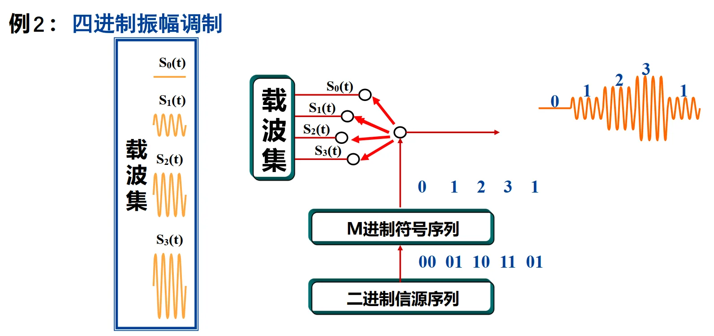
2.3 频移键控 (FSK: Frequency Shift Keying)¶
利用数字基带信号去控制载波的频率。
2.3.1 二进制频移键控 (2FSK)¶
2FSK 信号在数学上可以等效看作是两个不同载波频率的 2ASK 信号的线性叠加：
- 当发送“1”时，\(s_1(t)=1, s_2(t)=0\)，输出频率 \(\omega_1\)
- 当发送“0”时，\(s_1(t)=0, s_2(t)=1\)，输出频率 \(\omega_2\)
数学表达式：
\(s_1(t)=\sum_{n}a_{n}g(t-nT_s),s_2(t)=\sum_{n}\overline{a_{n}}g(t-nT_s)\)
信号产生方法：
1. 模拟调频法： 利用压控振荡器(VCO)，相邻码元之间的相位是连续变化的。
2. 键控法： 利用两个独立的振荡器和选通开关，相邻码元之间的相位不一定连续。
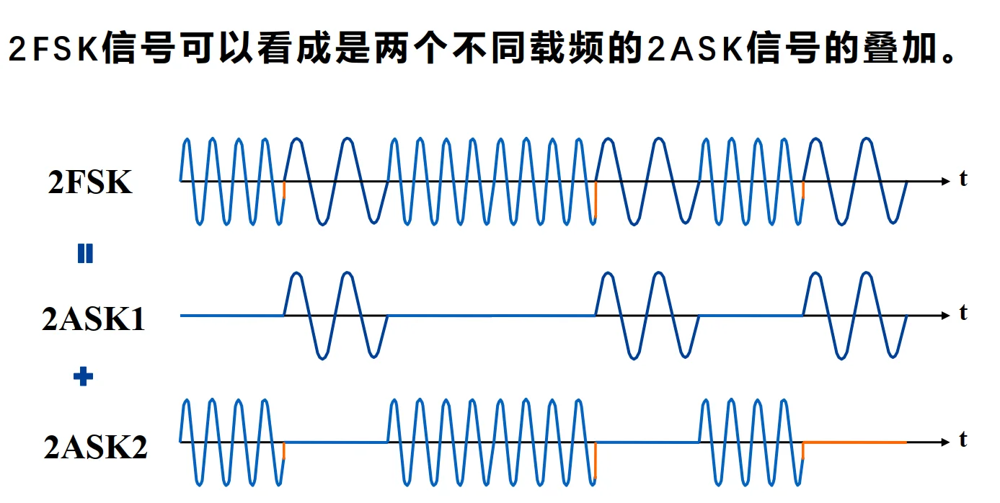
2.3.2 多进制频移键控 (MFSK)¶
载波共有 \(M\) 种发送频率：
核心正交性证明与要求：
为了在接收端能够无干扰地分离这 \(M\) 个信号，通常要求 \(M\) 种发送信号互相正交：
满足正交的条件是：信号之间的频率间隔必须满足
其中 \(n\) 为整数。
2.4 相移键控 (PSK: Phase Shift Keying)¶
利用数字基带信号去控制载波的初始相位。这是现代数字通信中最常用的线性调制技术。
2.4.1 二进制相移键控 (BPSK / 2PSK)¶
在 BPSK 中，\(M=2\)。相位取值 \(\Phi_i(t) \in \{0, \pi\}\)。
- 发送“1”时，输出 \(\cos(\omega_c t)\)
- 发送“0”时，输出 \(\cos(\omega_c t + \pi) = -\cos(\omega_c t)\)
产生方法：
基带信号首先进行双极性不归零码型变换（“1”变 \(+1\)，“0”变 \(-1\)），然后直接与载波相乘。
2.4.2 多进制相移键控 (MPSK)及其重要性质 (I/Q分解)¶
MPSK 的一般时域表达式为：
相位通常均匀分布在圆周上：\(\varphi_n = \frac{2\pi}{M}(i-1) + \theta \quad (i=1, 2, ..., M)\)。
如果要用电路实现上述表达式，会涉及到多个并行乘法然后做加法
💡【重点推导：MPSK的正交分解】
利用三角函数展开公式 \(\cos(\alpha + \beta) = \cos\alpha\cos\beta - \sin\alpha\sin\beta\)，我们可以将 MPSK 信号重写为：
令：
- \(a_n = \cos\varphi_n\)
- \(b_n = \sin\varphi_n\)
则信号可以分为同相(In-phase)和正交(Quadrature)两路：
结论（极其重要）：
任意 MPSK 信号都可以看成是对两个正交载波（\(\cos{\omega_c t}\) 和 \(\sin{\omega_c t}\)）进行多电平双边带调制（MASK）后得到的两路信号的叠加！
即：
- \(I(t)\): 同相分量 (In-phase component)
- \(Q(t)\): 正交分量 (Quadrature component)
2.4.3 正交相移键控 (QPSK / 4PSK)¶
QPSK 是 \(M=4\) 的特殊情况，每个码元含有 2 比特信息 (\(00, 01, 10, 11\))。
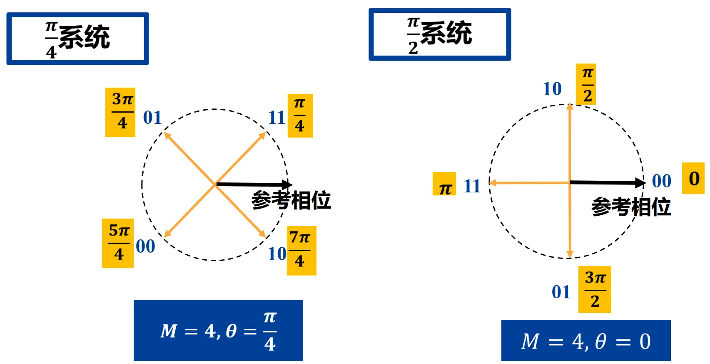
1. 格雷码 (Gray Code) 的映射优势：
在 QPSK 矢量图中，为相位分配比特组合时通常采用格雷码（如：\(00 \rightarrow 0^\circ, 01 \rightarrow 90^\circ, 11 \rightarrow 180^\circ, 10 \rightarrow 270^\circ\)）。
- 原因与好处： 在实际信道中，因相位误差造成误判的概率大多发生在相邻相位之间。格雷码确保了相邻相位所代表的两个比特中只有一位不同，因此发生一次相邻相位误判只产生 1 比特的错误，从而有效降低整体的误比特率 (BER)。
2. QPSK的调制过程 (基于正交调制器)：
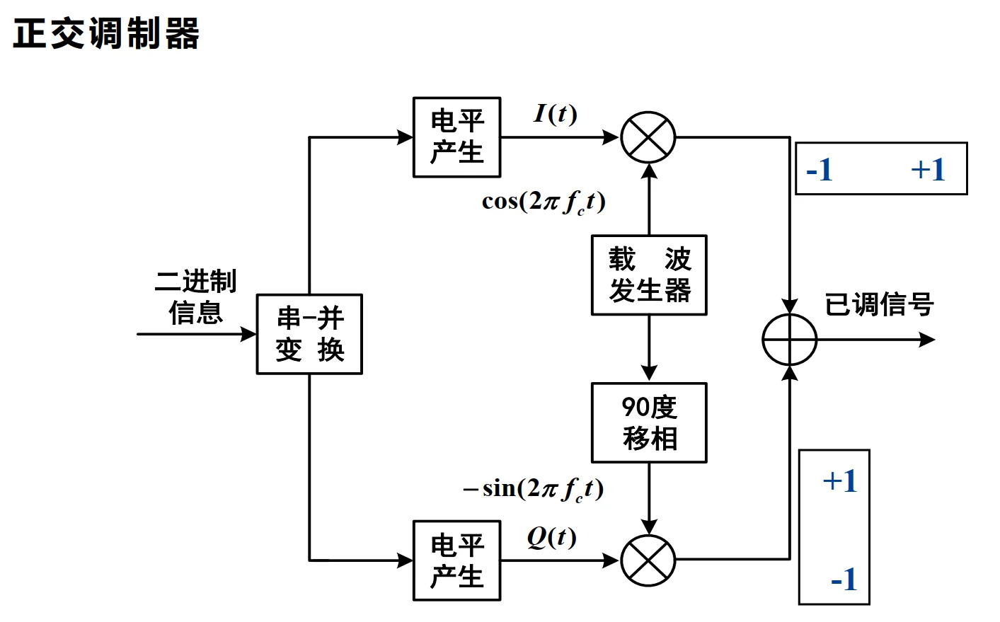
- 串-并变换： 高速的二进制信息流首先被分成两路（奇数位进入I路，偶数位进入Q路），此时码元周期变为原来的两倍（符号速率减半）。
- 电平产生： \(0 \rightarrow -1, 1 \rightarrow +1\)。
- 正交调制： I路与 \(\cos(\omega_c t)\) 相乘，Q路与 \(-\sin(\omega_c t)\)（相当于 \(90^\circ\) 移相）相乘。
- 叠加输出： 两路相加即得到 QPSK 带通信号。
奇数位进入I路，偶数位进入Q路？
\(I(t) = \sum_n a_n g(t-nT_s)\)
而 \(a_n = \cos(\phi_n)\), \(\phi_n = \frac{2\pi}{M}(i-1)+\theta\)，其中 \(i\) 不正是由两个 bit 同时决定的吗？比如 ab = 00 的时候，\(i = 1\), \(\phi_n = \theta\)，才能决定 \(a_n\)，进而决定 \(I(t)\)
以上思路完全正确，没有任何瑕疵，但是 QPSK 有一个巧合！
| 比特组合 \(ab\) (\(B_{odd}, B_{even}\)) | 对应的相位 \(\phi_n\) | \(I\)路电平 \(a_n = \cos(\phi_n)\) | \(Q\)路电平 \(b_n = \sin(\phi_n)\) |
|---|---|---|---|
| 1 1 | \(\pi/4\) (\(45^\circ\)) | \(\mathbf{+\frac{\sqrt{2}}{2}}\) | \(\mathbf{+\frac{\sqrt{2}}{2}}\) |
| 0 1 | \(3\pi/4\) (\(135^\circ\)) | \(\mathbf{-\frac{\sqrt{2}}{2}}\) | \(\mathbf{+\frac{\sqrt{2}}{2}}\) |
| 0 0 | \(5\pi/4\) (\(225^\circ\)) | \(\mathbf{-\frac{\sqrt{2}}{2}}\) | \(\mathbf{-\frac{\sqrt{2}}{2}}\) |
| 1 0 | \(7\pi/4\) (\(315^\circ\)) | \(\mathbf{+\frac{\sqrt{2}}{2}}\) | \(\mathbf{-\frac{\sqrt{2}}{2}}\) |
对于奇数位，奇数位为1可以直接确定 \(a_n=\frac{\sqrt{2}}{2}\)，奇数位为0可以直接确定 \(a_n=-\frac{\sqrt{2}}{2}\)，根本不需要用到偶数位的信息！对于偶数位也是同理！
III. 信号检测（解调）基本概念（核心精简）¶
带通信号的解调（检测）本质是将频带信号重新搬移回基带，并判决出原始数字信息。按照是否利用载波的相位信息，可分为两大类：
- 相干解调 (Coherent Detection)： 接收机必须在本地恢复出与发送端同频同相的载波。其特点是不损失任何信息，抗噪声性能最佳，但硬件实现复杂（需要载波同步电路）。适用于 PSK、FSK、ASK。
- 非相干解调 (Non-coherent Detection)： 利用已调信号的包络 (Envelope) 特性进行判决，不需要恢复本地载波的相位。结构简单，但性能逊于相干解调。适用于 ASK、FSK、DPSK（差分相移键控）。
IV. 相干解调技术¶
4.1 2ASK 与 2FSK 的相干解调¶
1. 2ASK 的相干解调
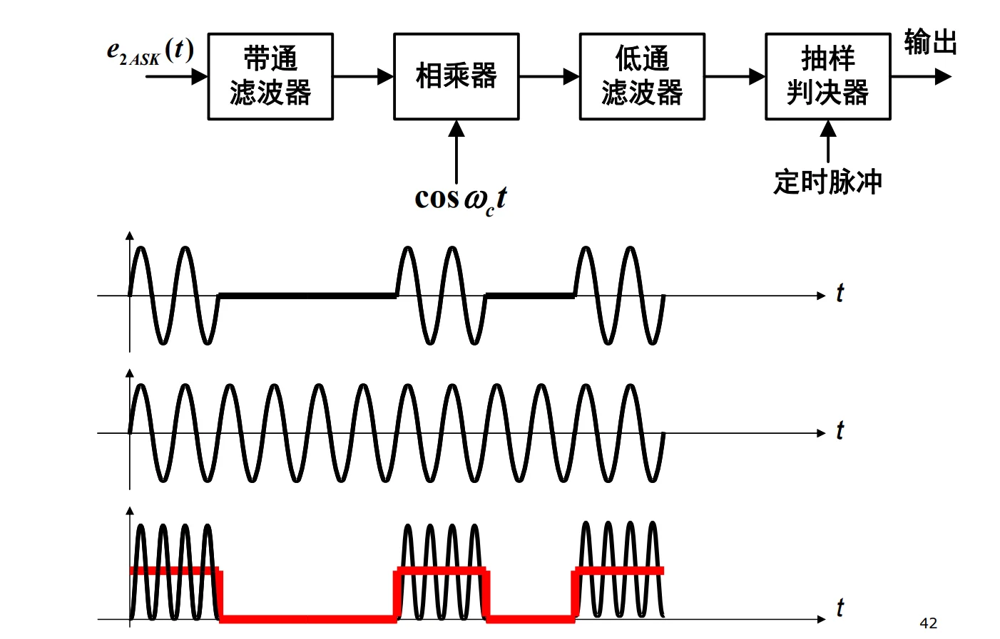
- 流程： 带通滤波（滤除带外噪声） \(\rightarrow\) 乘法器（与本地载波 \(\cos\omega_c t\) 相乘，将频谱搬移至基带） \(\rightarrow\) 低通滤波（滤除二倍频的高频分量） \(\rightarrow\) 抽样判决器（在最佳时钟脉冲下比较电压幅值与阈值）。
2. 2FSK 的相干解调
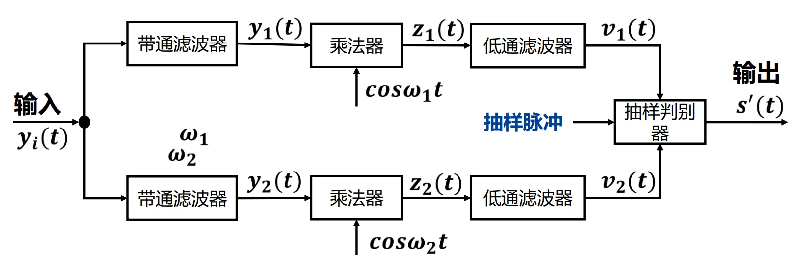
- 核心思想： 2FSK 信号可以看作两个不同频率的 2ASK 信号的叠加。因此，其相干解调器由两个并行的 2ASK 相干解调支路（分别对应 \(\omega_1\) 和 \(\omega_2\)）构成。
- 判决机制： 将上下两路低通滤波器的输出进行相减，如果差值大于 0，则判决为发送了频率 \(\omega_1\)（对应某个 bit）；反之则判决为 \(\omega_2\)。
4.2 BPSK (2PSK) 的相干解调与“相位模糊”¶
BPSK 只能采用相干解调。
- 原因分析： BPSK 信号的振幅不变（无法提取包络）、频率也不变（无法用滤波器分离）。信息全部携带在相位的变化中（\(0\) 或 \(\pi\)）。
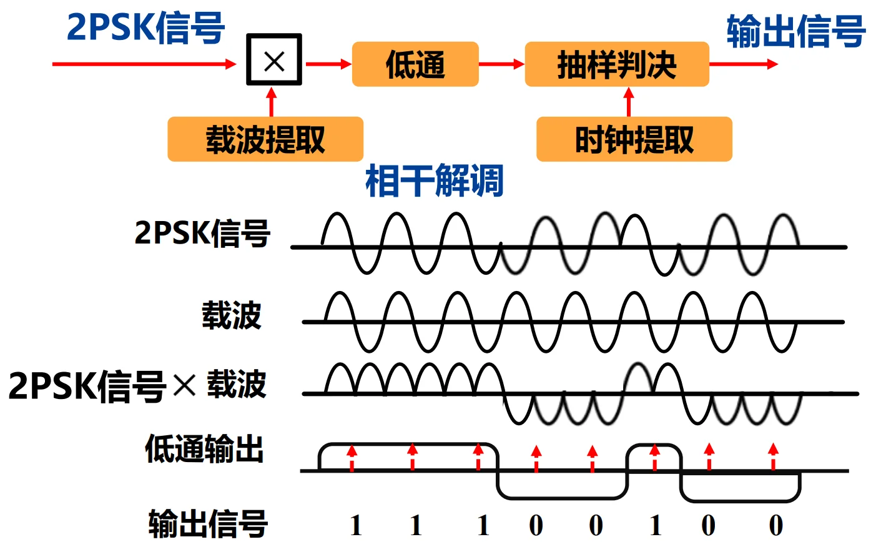
💡 核心工程问题：相位模糊 (Phase Ambiguity)
- 现象： 相干解调依赖于接收端提取出的本地载波 \(\cos(\omega_c t)\)。但在实际电路（如平方环法）提取载波时，系统无法分辨出 \(0\) 相位和 \(\pi\) 相位，提取出的载波可能会出现 \(180^\circ\) 的翻转（即变成了 \(-\cos(\omega_c t)\)）。
- 后果： 见，一旦本地载波相位反转，解调出来的所有基带电平将全部颠倒，导致数字信号全错（0变1，1变0）。(注：这也是后续需要引入 DPSK 差分调制的原因)。
4.3 MPSK 的相干解调与矢量空间判决¶
MPSK 信号是在相幅平面的圆周上取值的信号。
MPSK 信号：
基函数定义： MPSK 可以由两个正交的基函数表示：
接收端 I/Q 投影： 接收到的含噪声信号 \(r(t)\)，分别与两个基函数相乘并积分（实际上就是寻找投影）：
相位计算与判决：
根据算出的 \(X\) 和 \(Y\)，接收机计算出接收信号的估计相位：
随后，计算 \(\hat{\phi}\) 与 \(M\) 个标准发送相位 \(\phi_i\) 之间的距离 \(|\phi_i - \hat{\phi}|\)。根据最大似然原理，选择距离最近的（最小的）标准相位作为判决结果。
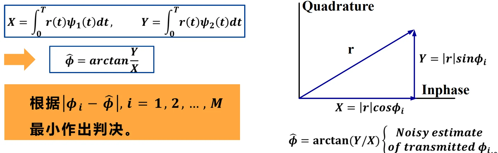
在矢量图上，这等价于将圆周划分为 \(M\) 个对称的扇区。只要接收到的矢量点落在某个扇区内，就无条件判决为该扇区对应的星座点。
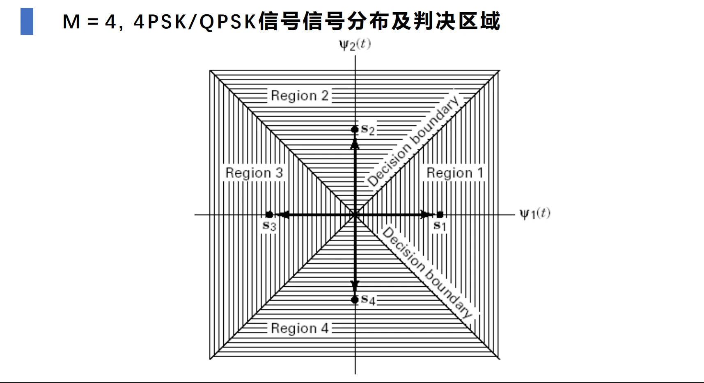
4.4 二进制相干解调系统的抗噪声性能对比（极重要）¶
通过计算受加性高斯白噪声 (AWGN) 干扰时的误码率 (\(P_e\))，对比三种基础调制的性能：
- 符号定义：
- \(E_b\): 每比特信号能量
- \(n_0\): 噪声单边功率谱密度
- \(\text{erfc}(x)\): 互补误差函数（或表示为 \(Q(x)\) 函数），该函数的值随 \(x\) 的增大而急剧减小。
1. 理论误码率公式：
- 2ASK: \(P_{e2ASK} = Q\left(\sqrt{\frac{E_b}{2n_0}}\right)\)
- 2FSK: \(P_{e2FSK} = Q\left(\sqrt{\frac{E_b}{n_0}}\right)\) (注：课件中使用了 \(2n_0\) 和 \(\frac{E_b}{2n_0}\) 等不同表达，统一化为标准 Q 函数自变量的比例)
- 2PSK: \(P_{e2PSK} = Q\left(\sqrt{\frac{2E_b}{n_0}}\right)\)
2. 核心结论：
在信号能量 \(E_b\) 和噪声谱密度 \(n_0\) 相同的情况下：
- 2PSK 抗噪声性能最好（判决距离最大）。
- 2FSK 性能其次，比起 2PSK，它需要增加一倍的功率（即相差 3dB）才能达到相同的误码率。
- 2ASK 性能最差，比起 2FSK，它还要再差 3dB。
V. 非相干解调技术¶
当信噪比足够高时，为降低接收机成本和功耗，通常采用非相干解调。接收机不需要提取载波相位 \(\theta\)，默认它是一个在 \((0, 2\pi)\) 均匀分布的随机变量。
5.1 2ASK 的非相干解调（包络检波）¶
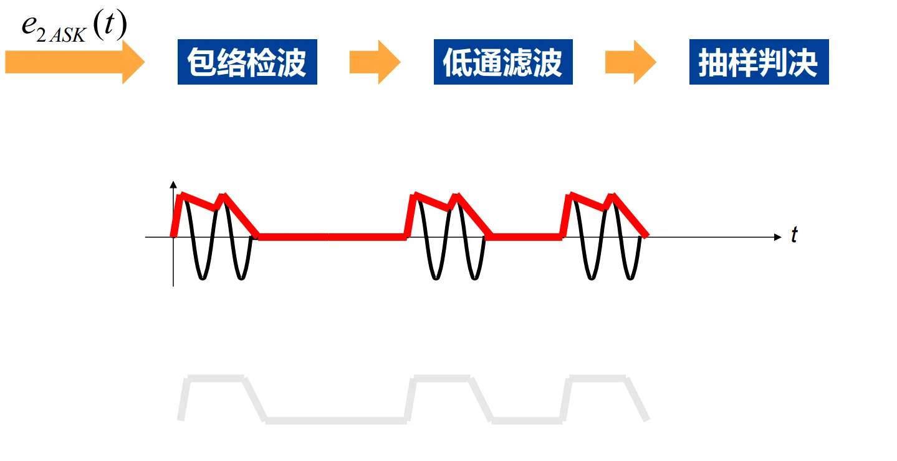
- 结构： \(e_{2ASK}(t) \rightarrow\) 包络检波器 (半波/全波整流) \(\rightarrow\) 低通滤波器 \(\rightarrow\) 抽样判决。
- 原理： 2ASK 的“1”和“0”表现为有无射频脉冲。直接通过整流电路（例如二极管）提取外层包络形状，包络大判为“1”，包络小判为“0”。
5.2 FSK 信号的非相干解调（重点）¶
FSK 的信息藏在频率里，既可以用包络检波，也可以利用极其巧妙的正交平方接收法。
方法一：包络检波接收方式
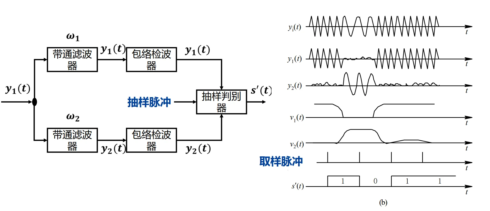
原理： 分为 \(M\) 个并行的带通滤波器（中心频率分别为 \(f_1, f_2, ..., f_M\)）。哪个频率被发送了，对应的带通滤波器输出的信号包络就最大。
判决： \(M\) 个路分别进行包络检波，最后使用择大判决法 (Choose Largest)，哪个包络最高，就输出对应的数字。
方法二：正交接收方式（数学之美）
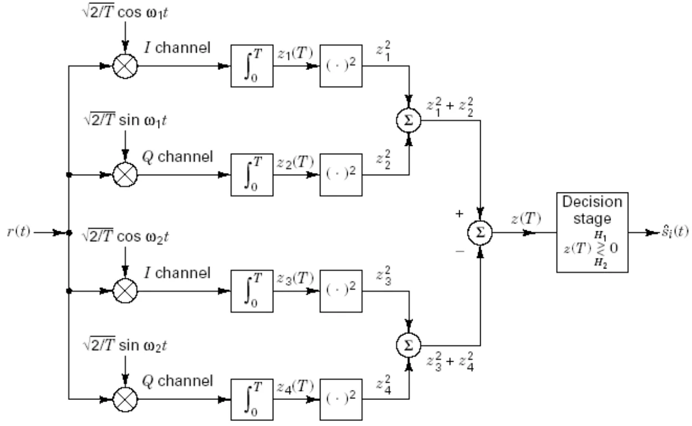
困境： 接收信号 \(r(t) = A\cos(\omega_i t + \phi) + n(t)\) 中，初始相位 \(\phi\) 是未知的。如果在本地随便找一个 \(\cos\omega_i t\) 去乘，一旦 \(\phi = \pi/2\)，积分结果直接为 0，信号就“消失”了！
巧妙的解法： 对每一个可能的频率 \(\omega_i\)，我们在本地同时使用它对应的同相分量 \(\cos\omega_i t\) 和正交分量 \(\sin\omega_i t\) 两路去相乘。
- 同相路积分后得到：\(X \propto A\cos\phi\)
- 正交路积分后得到：\(Y \propto -A\sin\phi\)
消去未知相位： 将这两路的输出分别平方再相加：
结论： 经过平方和运算，未知的随机相位 \(\phi\) 被彻底消去了！最终得到的 \(Z^2\) 只与该频率支路的信号幅度 \(A\) 有关。在 \(M\) 个频率支路中，哪一路的 \(Z^2\) 值最大，就说明发送了哪种频率。这种方法被广泛应用于现代数字接收机中。
VI. 二进制数字调制系统性能总结与对比（核心精简）¶
在探讨多进制之前，我们首先从宏观上总结二进制系统（2ASK, 2FSK, 2PSK）的抗噪声性能（以误码率 \(P_e\) 衡量）。
核心性能排序：
在相同的每比特能量 (\(E_b\)) 和噪声单边功率谱密度 (\(n_0\)) 下：2PSK 最优，2FSK 居中，2ASK 最差。
等效信噪比关系： 为了达到完全相同的误码率，三种体制所需要的信噪比（\(r = E_b / n_0\)）呈倍数关系：
分贝 (dB) 关系： 转换为对数域，上述关系等价于相差 3dB 和 6dB：
结论：2PSK 比 2FSK 节省 3dB 功率，比 2ASK 节省 6dB 功率。
VII. M进制信号及星座图：带宽与功率的博弈¶
为什么要引入 M 进制调制？
对于高速数据传输，如果一直使用二进制，符号速率（波特率 \(R_s\)）会非常高，占用极大的频带宽度。
- 核心矛盾转移： \(R_b = R_s \log_2 M\)。当比特率 \(R_b\) 不变时，增大进制数 \(M\)，符号速率 \(R_s\) 会降低（\(1/T\) 减少），从而大幅降低所需的传输带宽。
- 付出的代价： 如果保持信号的总发射功率（幅度）不变，信号空间中点与点的距离变近了，噪声容限下降，误码率上升。要想保持原有的误码性能，必须成倍提高发送功率。
- 总结：M进制调制本质上是用“功率”去换取“带宽”。
MPSK 信号星座图（Constellation Diagram）：
MPSK 信号的所有可能取值都分布在一个半径为 \(\sqrt{E_s}\) 的圆周上。
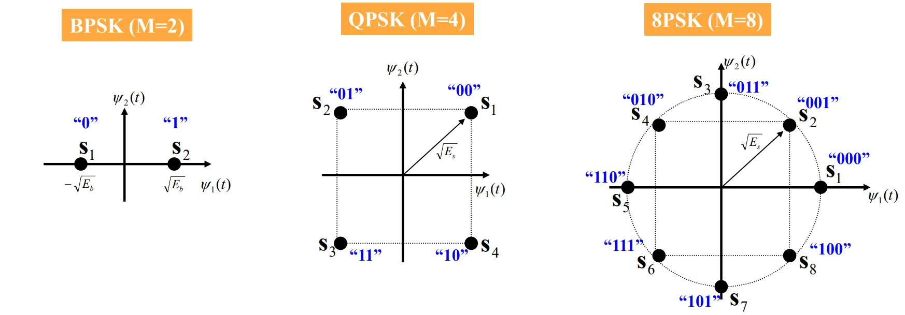
- BPSK (M=2): 2个点，相距最远（距离为 \(2\sqrt{E_b}\)），抗干扰最强。
- QPSK (M=4): 4个点，分布在四个象限。任意一个星座点都可以用一对正交分量（I路和Q路，即 \(\pm \cos\) 和 \(\pm \sin\)）来唯一确定。
- 8PSK (M=8): 8个点，点与点之间的角距缩小为 \(\pi/4\) (\(45^\circ\))。
VIII. MPSK信号的误码率推导与分析（重点深度解析）¶
在AWGN（加性高斯白噪声）信道下，MPSK信号的误码率分析不再仅仅是简单的一维高斯分布，而是涉及到二维矢量空间中的相位分布。
8.1 信号模型与接收端相关器¶
1. 输入信号定义：
- \(A\): 信号振幅
- \(M\): 进制数
- \(\frac{2\pi i}{M}\): 当前符号携带的标准相位信息
- \(\theta\): 载波初始参考相位（为了简便通常设为0）
利用三角公式展开，它同样可以分解为 I路 (\(\cos\omega_0 t\)) 和 Q路 (\(\sin\omega_0 t\)) 的叠加。
2. 解调相关器：
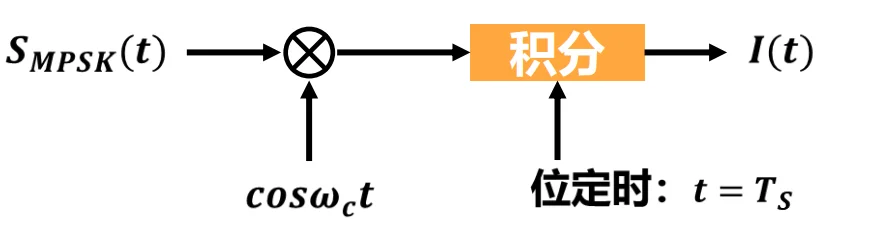
接收信号与本地载波 \(\cos\omega_c t\) 相乘，并在一个符号周期 \(T_s\) 内进行积分，提取出对应的 I/Q 分量，进而计算出接收相位的估计值。
8.2 高信噪比下的相位噪声概率密度函数 \(f(\theta)\)¶
当信道中加入白噪声后，接收到的矢量不再是一个干净的点，而是一个在中心点附近弥散的“云团”。这导致接收相位 \(\theta\) 变成了一个随机变量。
关键近似公式： 当符号信噪比 \(E_s/N_0\) 足够大时，由随机过程理论可以推导出相位误差 \(\theta\) 的概率密度函数近似为：
- 符号定义：
- \(E_s\): 每符号能量 (Symbol Energy, 且 \(E_s = E_b \log_2 M\))
- \(N_0\): 噪声单边功率谱密度
- 此公式表明：噪声相位误差 \(\theta\) 越接近 0，概率越高；误差越大，概率呈指数级下降。
8.3 MPSK 的符号误码率公式 (\(P_{E,MPSK}\)) 理论推导¶
1. 判决边界与错误条件：
对于 MPSK，整个 \(360^\circ\) 圆周被分成了 \(M\) 个扇区，每个扇区夹角为 \(2\pi/M\)。
只要噪声引起的相位偏移 \(\theta\) 使得接收矢量跑出了当前正确的扇区（即 \(|\theta| > \pi/M\)），就会发生判决错误。
2. 计算正确概率与误码率：
误符号率 \(P_E\) = 1 - 落在正确扇区内的概率
将前面近似的 \(f(\theta)\) 代入积分，利用标准正态累积误差函数 \(Q(x)\)，可以得出极其重要的近似公式：
💡【公式的几何直观理解（极其重要）】
不要死记硬背这个公式，它的核心在于 \(\sqrt{E_s} \sin(\pi/M)\) 这一项：
- 在半径为 \(\sqrt{E_s}\) 的圆周上，两个相邻星座点之间的角度是 \(2\pi/M\)。
- 由几何三角关系可知，这两个相邻点之间的直线欧氏距离的一半为：\(d_{half} = \sqrt{E_s} \sin(\pi/M)\)。
- 因此，\(Q\) 函数里面的变量本质上就是 \(\frac{d_{half}}{\sqrt{N_0/2}}\)（即信号点到判决边界的距离 / 噪声标准差）。
- 结论： M 越大，\(\pi/M\) 越小，\(\sin(\pi/M)\) 越小，星座点挨得越紧（距离越短），\(Q\) 函数的值越大，误码率急剧升高。
(注：对于 MDPSK 差分多相调制，误码率公式为 \(P_{E, MDPSK} \approx 2Q\left[ \sqrt{\frac{2E_s}{N_0}} \sin\left(\frac{\pi}{\sqrt{2}M}\right) \right]\)，性能比同等 MPSK 略差。)
8.4 MPSK 调制信号的直观输出（星座散点图）¶
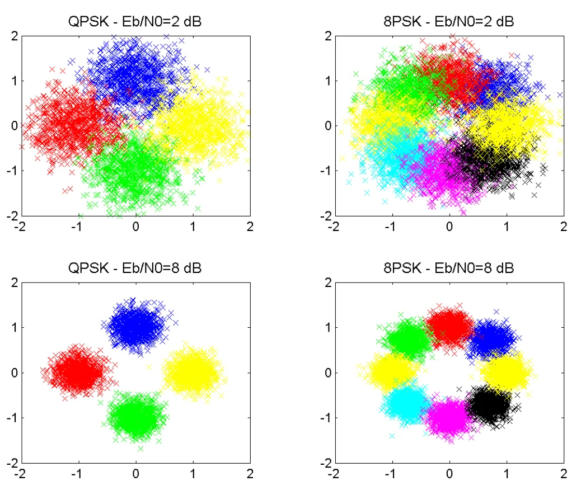
散点图非常完美地验证了我们的理论：
1. 左侧 QPSK vs 右侧 8PSK（相同 \(E_b/N_0 = 2dB\)）：
QPSK 的四团颜色还能勉强区分边界；而 8PSK 的八团颜色已经严重粘连、互相重叠。因为 \(M\) 变大使得判决边界变窄了，容易越界造成错误。
2. 上方 \(E_b/N_0 = 2dB\) vs 下方 \(E_b/N_0 = 8dB\)（相同体制）：
信噪比提高后（下方图），噪声方差减小，每一团散点变得非常“紧凑”，绝大部分点牢牢缩在自己的扇区内，基本不会发生越界错判，误码率大幅降低。